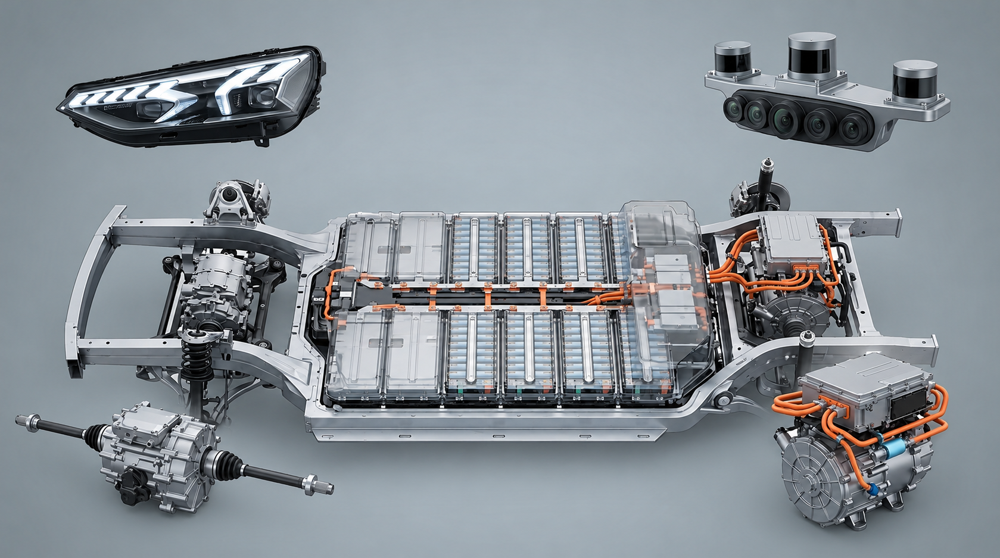

1. Faróis LED MAtriciais
Sistema composto por dezenas ou milhares de pequenas iluminações LED independentes. Eles utilizam a câmera para apagar ou reduzir a intensidade dos pontos que podem ofuscar a visão dos motoristas ou pedestres, permitindo manter o farol alto ligado constantemente.
2. Sensores LiDAR e Câmeras
Os sensores emitem pulsos de luz infravermelha para medir distâncias e criar um mapa 3D exato do ambiente em tempo real, enquanto as câmeras capturam imagens visuais para identificação de maiores detalhes.
3. Pack de Baterias
Principal reservatório de energia do veículo, armazenando eletricidade em formato químico, geralmento íons de lítio, e convertendo-a em corrente elétrica.
4. Motor Elétrico Dianteiro
Converte energia elétrica em movimento mecânico através de eletromagnetismo para garantir tração mecânica, estabilidade e eficiência energética ao veículo.
5. Motor Traseiro com Inversor
O motor se responsabiliza pela rotação das rodas, já o inversor gerencia e traduz a energia entre a bateria e o motor, ou seja, de Corrente Contínua (CC) para Corente Alternada (CA) trifásica.